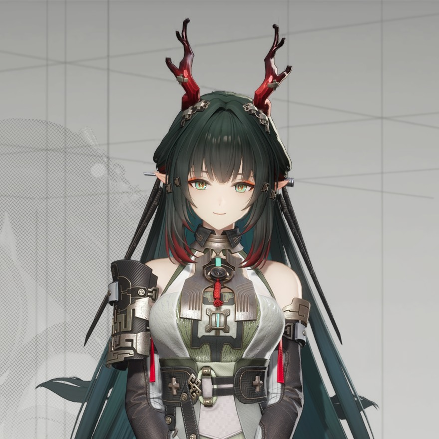
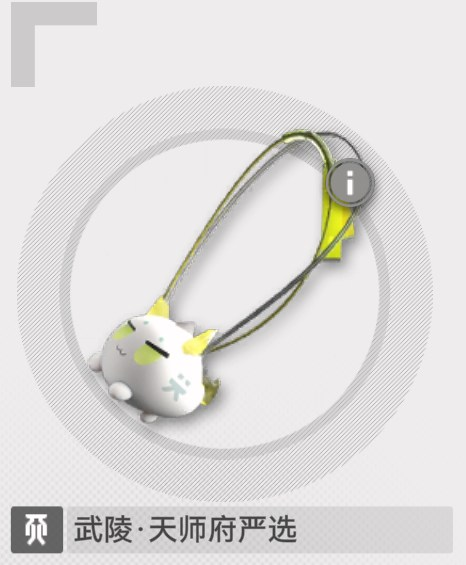

院校 / ACADEMY
宏山科学院|天师府学院
庄方宜接受过系统的科研与源石技术教育，并在学习期间展现出优秀的知识储备与研究能力。
毕业后进入宏山科学院相关研究体系，参与息壤新材等项目的研究工作，并逐渐成为武陵地区重要的科研人员。
宏山科学院 · 研究人员
从科研人员到城市管理者，她所承担的职责早已不再局限于实验室。 在她看来，武陵的发展与这里居民的生活，同样属于需要守护的研究成果。

ID 0708 麒麟 宏山科学院 未感染庄方宜接受过系统的科研与源石技术教育，并在学习期间展现出优秀的知识储备与研究能力。
毕业后进入宏山科学院相关研究体系，参与息壤新材等项目的研究工作，并逐渐成为武陵地区重要的科研人员。
“科研成果最终仍应回到普通人的生活之中。”
早期主要从事科研工作，参与息壤新材项目及裂隙相关研究。
后任武陵科学发展区管代，负责当地科研发展、城市建设及相关事务。
目前兼任息壤新材项目负责人天师，并与终末地工业展开裂隙相关研究合作。
从科研人员到城市管理者，庄方宜所承担的职责早已不再局限于实验室。 对她而言，武陵的发展与这里居民的生活同样属于她需要守护的研究成果。
项目围绕息壤新材展开研究，尝试利用相关技术应对裂隙及侵蚀问题， 并进一步探索其在土地、水源及城市建设等方面的应用。
经过长期研究，息壤技术逐渐成为武陵发展的重要基础。 庄方宜目前仍负责该项目，并以此为基础继续推进武陵地区的裂隙研究。
息壤新材材料特性与源石反应机理研究。
针对裂隙与侵蚀问题的技术验证与现场应用。
土地、水源与城市建设等方向的成果转化。
与终末地工业联合推进裂隙相关研究。
在庄方宜看来，科研成果最终仍应回到普通人的生活之中。因此，她除了负责科研项目， 也十分关注武陵的城市建设与公共事务。
相比单纯追求科研发展，她希望武陵能够拥有更加丰富的文化生活， 让这座城市真正成为人们可以长期生活的地方。

她把偏爱留给了这样一件小小的东西 —— 轻、圆、会飘起来的那一种。
负责武陵的人，也会有把肩膀交给一只软乎乎伙伴的时刻。